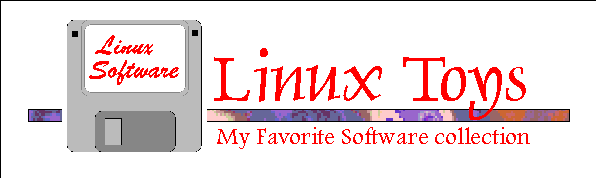

Linux Toys
Editors |
Productivity and Utilities |
Graphics |
Network and Telecommunications |
Games
Copyright (c) 1995-1996 John M. Fisk fiskjm@ctrvax.vanderbilt.edu
For information regarding copying and distribution of this material see the
COPYING document.
Welcome to the Linux ToyBox!
This is a collection of software for the Linux OS that:
- Compiles cleanly or is a binary distribution
- Does what it claims to do (read: "it works")
- Looks nice
- I like
Pretty subjective, eh?
Well, that's what this is all about -- after scrounging around
various Linux archive sites, downloading way too much stuff,
trying to set it up, and managing to get at least some of it
running -- I've arrived at a list of software that, quite frankly, I
really like.
Here's what I've got this running on:
- AMD 486/66 with 16 MB RAM
- Cirrus Logic CL-G5428 card with 14 inch SVGA monitor
- SoundBlaster 16 Sound Card with Creative Labs 2X CD-ROM
- Plain vanilla Slackware 3.0.0 ELF with Linux kernel 1.2.13
(InfoMagic November, 1995)
- XFree86 3.1.2
- PPP 2.2.0c on a USR Sportster 14.4 Fax Modem
I've tried to use a Sunsite or tsx-11 mirror whenever possible to
help keep down network traffic to these busy sites. I've also tried to
include Motif statically-linked programs whenever possible since not
everyone has purchased Motif... and because I'm currently a
Motif-have-not :-(
As of late 1995, these links are up to date. Keep in mind though
that this stuff can change pretty quickly.
Let me know if a link
is bad or if you think there's something that should be added to the list.
Have fun!
Editors
-
xhtml.tar.gz (504k)
- The xhtml (aka " A.S.H.E " A Simple HTML Editor) is
an excellent basic HTML editor. Written by John R. Punin at
Rensselaer Polytechnic Institute, this is a Motif statically-linked
editor with split windows for simultaneous editing and viewing. The
viewer does not support loading of images, but does include image
placeholders. Scroll down menus and pushbuttons simplify the placement
of tags. It also includes menus for creating forms. Keep in mind that
you'll need nls.tar.gz (9k)
if you don't already have it. The nls files allow you to run
Motif/XFree 2.1 apps under XFree 3.x. Without this, you'll quickly
discover that cut-and-paste operations result in an inevitable crash.
-
xcoral-2.1.linux.tar.gz (383k)
- XCoral is another awesome editor. It was written by
Lionel Fournigault, Dominique Leveque, and Bruno Pages who
introduce it as:
" ...a multiwindows mouse-based text editor for the X Window System.
A built-in browser enables you to navigate through C functions, C++
classes, methods, and files. A SMall Ansi C interpreter (SMAC) is
also built-in to extend dynamically the editor's possibilities."
The editor has a very nice user interface and an extensive online help system.
-
xwpe-1.4.2.tar.gz (339k)
- The X Window Programming Environment (XWPE) was written by
Fred Kruse and modeled after the Borland programming editors. It
is a multi-window, mouse/keyboard oriented editor with an extensive
array of configuration options. It supports C, C++, Pascal, and Fortran
compilers; Gbd, Sdb, and Dbx debuggers; and allows you to write, edit,
compile, make, run, debug, install and beautify from within the
programming environment. It can be invoked with and without the
programming support and comes with a non-X Window editor that can itself
be invoked with and without programming support. You'll need the Linux
patch
xwpe-1.4.2.linux-patch.tar.gz in order to compile this under Linux.
-
nedit-stat-311.tar.gz (631k)
- NEdit is a fast, easy to use, and fairly extensively
customizable Motif (statically-linked) editor written by Mark Edel,
Joy Kyriakopulos, Arnulfo Zepeda-Navratil, Suresh Ravoor, Donna Reid,
and Jeff Kallenbach at the Fermi National Accelerator Laboratory.
This is a great editor and a welcome replacement for xedit!
- Andrew User Interface System (AUIS)
- The Andrew system is a formitable development package developed at
Carnegie Mellon University which includes:
If your needs only include word processing, then the EZ editor, and
possibly the documentation files, may be all you require. This is an
impressive package but will need about 30MB of elbow room for the
full-blown installation.
Productivity and Utilities
-
plan-1.4.4.srcbin.tar.gz (1138k)
- Day Planner v. 1.4 written by Thomas Driemeyer is a
Motif (statically linked) graphical calendar program. It is an easy to
use, customizable, calendar/Todo manager with a separate alarm daemon
that can be programmed to execute a predefined script or executable. It
has day, week, month, and year views and allows creation of a fairly
comprehensive todo-database. If you've got to have one calander
program, this is it.
-
xgrok-1.1.2-stat.tar.gz from 3/17/95 (691k)
grok-1.2b-srcbin.tar.gz from 11/4/95 (849k)
- XGrok is yet another Motif (statically-linked) desktop app
designed to be used as a simple personal database program. It allows
creation of phone lists, addresses, and other small databases with ease.
As the author quite aptly noted, " If you're looking for a
database program to use with your Space Shuttle Project ... you're going
to be disappointed. " However, if you need an easy to set up
and use personal database program then this may be what you're looking
for. There are currently two iterations of this handy program -- xgrok
and the newer release grok. Both of these are available
at the same archive location.
-
xpostit-2.0.tar.gz (38k)
- XPostIt, in the grand heritage of UNIX, does one thing and
does it well. It's an X Window program that allows you to create PostIt
(tm) type notes that can be viewed or hidden. Nice for reminders or
quick to-do lists.
-
xfm-1.3.2.tar.gz (230k)
- Originally written by Simon Marlow and improved and now
maintained by Albert Graef the xfm file manager is an
impressive X Window app that allows extensive customization and GUI-base
file management. It consists of a File Manager Window and an
Applications Manager Window that allows click-to-load program start-up
as well as drag-and-drop operation. It had a very favorable write up in
the July, 1995 edition of Linux Journal (Issue 15). If you
haven't tried this program, you should; and if you haven't subscribed to
the Linux Journal you should!
-
ext2tool.zip (259k)
- If you fall into the camp of multi-OS users, then you may
want to try out ext2tool: a DOS program that allows you to list,
read, and copy files from your Linux partition. It does not support
writing to your Linux partition. This one misses the mark on
looks, but it is functional and helpful if your having to spend time
working under DOS.
-
Xaw3d-1.1-bin.tar.gz (1.12M)
- The Xaw3d libraries are an Xaw lib drop-in
replacement that gives your Athena based apps a much more pleasing 3d
" Motif-ish " appearance. This was also written up in the
July, 1995 edition of the Linux Journal by the folks at SSC. The secret to these is in setting
up the .Xresources file -- get the Linux Journal!
-
xkeycaps-2.29.tar.Z (308k)
- As a front end to xmodmap, XKeyCaps is an X Window app that
provides a graphical display of your keyboard mapping and allows
interactive remapping.
-
xcolorsel-1.1a.tar.gz (85k)
- Ever try to recolor your desktop or apps and wonder what Lemon
Chiffon or #e7f2b6 really looks like? Xcolorsel
gives a view of each of the colors in the rgb database together with its
various designations. Makes customization much less painful.
Graphics
-
ImageMagick-3.6.2-bin+src.tar.gz (1.17M)
- ImageMagick, by the folks at E.I. du Pont de Nemours and
Co. is an impressive X Window graphics app that displays,
manipulates, and converts images in a wide variety of formats. If you
want to include support for JPEG, TIFF, Raster, XPM, and a few other
formats you'll be wandering all over the 'Net looking for stuff... but
the final result is well worth the effort. This is an excellent
graphics viewer/converter program.
- XFig and Transfig
- If you're doing graphics work for publication under TeX, LaTeX, or PostScript
you'll want to get these siamese twin apps:
XFig allows creation of basic figures suitable for publication,
while TransFig performs the conversion of these graphics to a
variety of importable image formats including EPS, TeX, and LaTeX.
-
pixmap-2.6.tar.gz (120k)
- Pixmap, like the stock X Consortium app bitmap, is an
easy to use drawing program to create your own XPM bitmapped images. If
you decide to set this one up you'll probably want to get the latest
version of the libXpm libs
(libXpm-x.y.tar.gz), which come in handy for other graphics programs
as well.
-
xbmbrowser5.1.tar.gz (72k)
- This is another small-but-very-handy X Window app that greatly aids
in customizations. XBMBrowser provides a graphical view of all
the .xbm files in a directory. It also allows you to add support for
XPM files at compile time, but you'll need to get the latest version of
the libXpm libs
(libXpm-x.y.tar.gz) in order to do this. You'll also want these
libraries for XPM support for other programs such as ImageMagick.
Network and Telecommunication
-
netscape-v112-export.i486-unknown-linux.tar.Z (1.6M)
- If you are a student, work in a non-commerical academic institution,
or for a not-for-profit organization, then the Netscape Navigator
is available without fee. Even if you don't fit into one of these
catagories, the registration fee is only $39 which is a steal for
this top flight WWW browser. The above link will take you to one of
Netscape's mirror sites (server.berkekey.edu). If you want to try
to get to Netscape itself you can give the following link a try:
ftp.netscape.com
- Want to try out a couple new HTML 3.0 compliant browsers?
Then get:
These do lack a bit of the functionality of Netscape Navigator but
provide a look into what's coming. While you're at it you may also want
to check out the offerings of the various Mosaic based browsers.
There are several to choose from that will run under Linux and can be
found at the
GA Tech sunsite.unc.edu mirror.
-
llnlXFtp2.0.3-Motif-bin-static.tar.gz (765k)
- The llnlXFtp FTP client program written by Neale Smith
at the Lawrence Livermore National Laboratory is a great
app if you're having to do any significant file transfer. It is
feature-rich and easily customizable. There are several other similar
programs including xftp, mftp, and Ftptool as well as xarchie
and xgopher programs available at the
GA Tech sunsite.unc.edu mirror site. Check them out.
-
ncftp-2.1.0.tgz (170k)
- If you're not running X Window but still have to do a lot of file
transfer then the ncftp enhanced ftp client is worth trying out.
It, too, is quite user customizable and feature-rich. If you're running
a term connection then try
ncftp185+term.tar.gz.
-
xmail_1.6.tar.gz (128k)
- For all you folks using Slackware Linux distributions... ever
notice that the X Window mail client is xmh which only works
if you're running the MH mail handling system. Yet the stock
mailhandler is sendmail. Hmmm. Well, if you've actually gotten
sendmail up and running and still want an X Window client, then try out
xmail. It's admittedly not the prettiest or the most
feature-rich, but it does provide a nice X Window interface, and if
you're using the Xaw3d libraries then this looks even better.
XMail will support any sendmail type mail delivery program (including
Smail).
-
minicom-1.71.tar.gz (161k)
- Probably because most UN*X OS's are native networked operating
systems, there are few telecommunications programs (on the order of
ProComm or Telix for DOS). One of the nicest, though, has got to be
Minicom, which is a Telix-like comm program. It supports
multiple transfer protocols including zmodem, and now has support for
ANSI graphics so you can dial up your favorite local BBS and have the
same graphics support you'd have under DOS. This is a nice program that
is easy to use and configure.
Games
Hmmm... not much to talk about here since I'm not much of a gamer :-)
However, you're more than welcome to browse the selections offered by the
kind folks at the
Georgia Tech
sunsite.unc.edu mirror site.
 Back up to Linux
HomeBoy WebPage
Back up to Linux
HomeBoy WebPage
This page written and maintained by:
John M. Fisk at
fiskjm@ctrvax.vanderbilt.edu